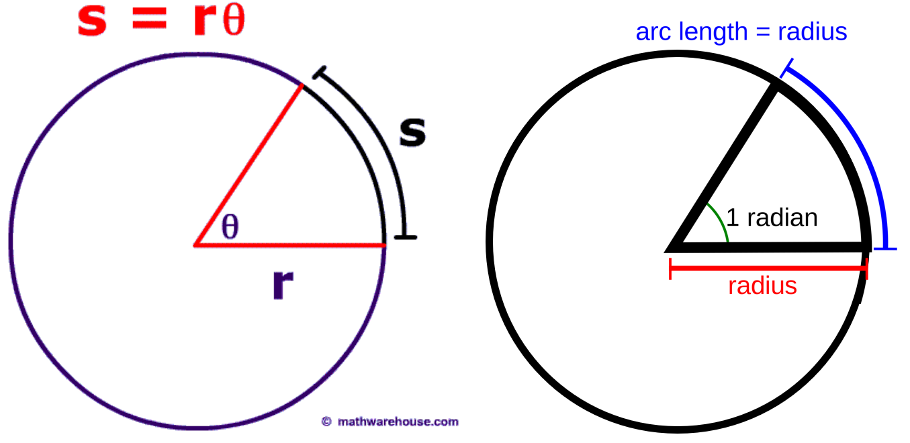
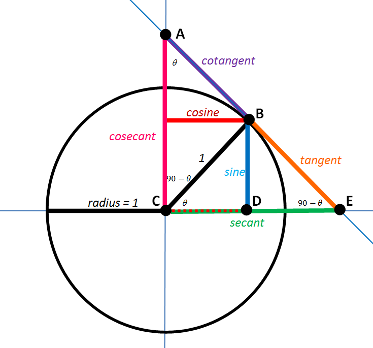

Spherical Astronomy#
Nov 25, 2025 | 6 min read
The Celestial Sphere#
Historically speaking, the Celestial Sphere was the apparent surface of the heavens, on which the stars seem to be fixed. Nowadays, the term Celestial sphere refers to an abstract construct used to describe the locations of objects in the sky.
The Celestial Sphere has an infinite radius, in the sense that all the objects on it are at the same endless distance. In other words, the distance of an object is not required to describe its position in the sky. For obvious mathematical reasons, it is easier to deal with a sphere with a unitary radius (think about trigonometry) rather than an infinite one. The centre of the Earth is the centre of the celestial sphere, and the sphere’s pole and equatorial plane are coincident with those of the Earth.
Dealing with a sphere with unitary radius is not dissimilar to dealing with a circle with unitary radius, which is the goal of trigonometry. For this reason, we talk about spherical trigonometry, also called spherical astronomy when referring to the Celestial Sphere.
Trigonometry#
Trigonometry is the branch of mathematics concerned with specific functions of angles and their application to calculations. Considering a circle with radius \(r\), the arc \(s\) subtended on the circle by an angle \(\theta\) is equal to the radius multiplied by the angle \(s = r \theta\). The first plot in Figure 1 exemplifies this case. For this to work, the angle \(\theta\) must be a dimensionless quantity. We can see that \(s=r\) for \(\theta = 1\), we thus define one radian as the angle formed at the centre of a circle by an arc whose length is equal to the radius of the circle (second plot in Figure 1). Following this definition, an angle of 360° is equal to \(2 \pi\), thus 1 radian = 57.296°.
{kind=link}

Basic concepts of trigonometry.#
Figure 2 shows the relationship among the sine (\(\sin\)), cosine (\(\cos\)), and tangent (\(\tan\)) trigonometric functions. The secant function (\(\sec\)), equivalent to the inverse of the cosine, is of relevance for Astronomy.
{kind=link}

Wikipedia link to trigonometric functionsThe most essential trigonometric functions Wikipedia link to trigonometric functions#
There are four standards to represent angles in Astronomy:
Radians: the standard way. Angles are measured between \(0\) and \(2 \pi\) radians. Radians are the only accepted input by trigonometric functions.
Decimal degrees: angles vary between \(0\) and \(360°\). Given \(\alpha\) the value of the angle in radians and \(\beta\) the same angle in decimal degrees, the relationship between the two is \(\beta = \alpha * 180 / \pi\)
Degrees (dms): it is a sexagesimal system where the angles still vary between \(0\) and \(360°\), but fractions of a degree are expressed as separate numbers rather than decimal figures. One degree is divided in \(60\) arcminutes (denoted with the symbol \('\)), one arcminute is divided in 60 arcseconds (symbol \(''\)). Fractions of arcseconds are expressed as a decimal part. The conversion from decimal degrees to sexagesimal degrees is obtained through several steps:
The whole number part of your decimal degrees gives you the degrees in dms system.
Multiply by 60 the decimal part of your decimal degrees. The whole number part of the result is arcminutes.
Multiply the decimal part of the last result by 60 to convert it to arcseconds. The sign is positioned before the degrees. The whole number part is the part before the decimal sign (e.g., \(47\) in \(47.73\), \(-17\) in \(-17.43\)), the decimal part is the one after the decimal sign. The inverse conversion is much simpler: \(\beta = d + m/60 + s/3600\).
Hours (dhms): again a sexagesimal system, with angles measured between \(0\) and \(24\) hours. Thus, one hour corresponds to 15 degrees. To avoid confusion with the degree (dms) system, the units composing an hour are called minutes and seconds rather than arcminutes and arcseconds. The conversion from decimal degrees to sexagesimal degrees is obtained through four steps:
Divide the decimal degrees by 24 to get the value in decimal hours.
The whole number part of your decimal hours gives you the hours in hms system.
Multiply by 60 the decimal part of your decimal hours. The whole number part of the result is the minutes.
Multiply the decimal part of the last result by 60 to convert it to seconds.
The inverse conversion is much simpler: \(\beta = (h + m/60 + s/3600) * 15\).

Graphical representation of angles in degrees, radians, and hours. [^Degrees, radians, hours]#
Spherical trigonometry#
Consider a sphere with radius \(r\) and centred at \(C\).
A plane passing through the centre of the sphere \(C\) divides the sphere into two identical parts, called hemispheres. The intersection of this plane with the sphere is called a great circle. A great circle always separates two hemispheres. Consider now the perpendicular (or normal) to the same plane and passing to the center \(C\): the intersection \(P\) and \(P'\) between this normal and the sphere are called poles .
The intersection between the sphere and any other plane not passing through the centre \(C\) is called a small circle.
The shortest path between two points on a sphere \(Q\) and \(Q'\) is always along a great circle.

Representation of a great circle and a small circle. [^Great circles and small circles]#
If you identify three points on the surface of the sphere, and connect them with great circles, you obtain a spherical triangle. Considering the spherical triangle in the figure, the angle c subtended by the arc AB is called the central angle and is measured in radians or degrees.
The length of the arc AB is equal to the radius of the sphere multiplied by the subtended central angle, \(AB = r* c\). If we consider a sphere with unit radius (\(r=1\)), then \(AB = c\), and we can measure the arc AB in radians or degrees.

A spherical triangle \(ABC\) identified by the three arcs \(a\), \(b\), \(c\) and the corresponding central angles. [^Spherical triangle]#
Other properties of spherical triangles:
The sum of the internal angles is always greater than \(2 \pi\) (\(180°\)).
The spherical excess \(E\) is defined as the sum of the internal angles of the spherical triangle, minus \(2 \pi\), \(E = A + B + C - 2\pi\).
The area of the spherical triangle is equal to \(E r^2\).
The *area of the sphere is equal to \(4\pi r^2\)
If we assume \(r=1\), as for example with the celestial sphere, we have that a portion of the sky identified by a spherical triangle has area equal to \(E\). Equivalently to the radians for an arc length, we can measure this area as steradians, if the central angles are expressed in radians. The area of the celestial sphere is then equal to \(4 \pi\) steradians.
From now on, we will always assume \(r=1\).
Coordinate systems#
To describe the position of points in space using numbers (called coordinates), we need to define a reference structure so that every point can be uniquely identified. This mathematical framework is called coordinate system.
Let’s suppose we want to identify the position of a point on the surface of a sphere with unit radius. In this specific case, we need only two ingredients to define a coordinate system:
The direction of the perpendicular of a plane passing through the centre of the sphere (\(z\) in the figure).
The direction of one axis lying on the plane (\(x\) in the figure)
The perpendicular is often called normal. The definition of the plane alone is not sufficient; we also need to define the positive and negative sides of the hemispheres identified by the plane.
In such a system, a given point \(P\) is uniquely identified by two angles, \(\psi\) and \(theta\), in the figure. In a three-dimensional space, you would need three coordinates to constrain the position of an object uniquely. In our specific case, two coordinates are sufficient because we assumed we are on the two-dimensional surface of a fixed sphere. The third coordinate, i.e., the radial distance from the centre, is always equal to \(1\).